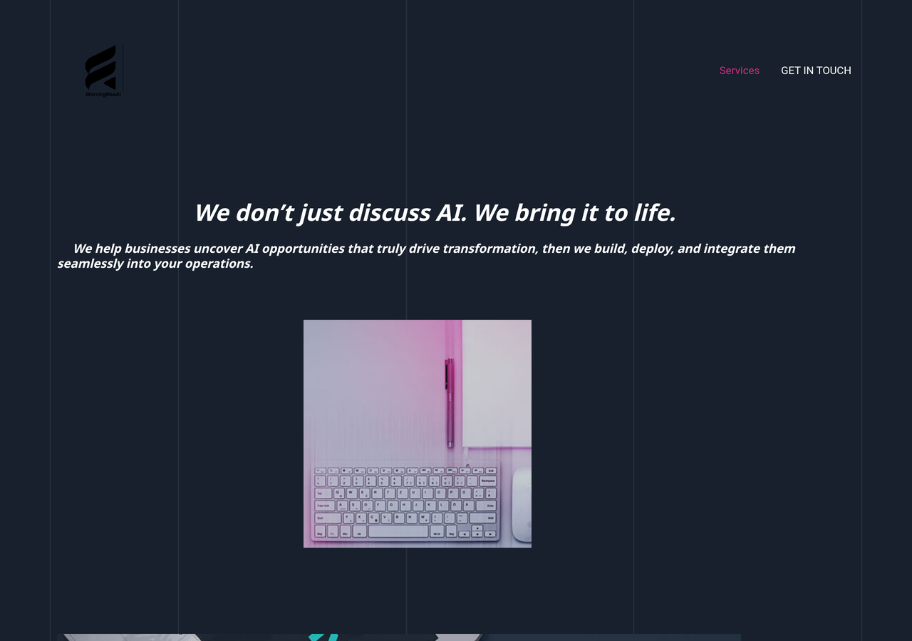

MorningRise has a name, a site, and a clear idea. What it doesn't have yet, and the job post says this plainly, is a productized service: a repeatable thing to demo, sell, deliver, and prove. This is a blueprint for that. Not a thirty-page strategy doc. The shortest honest route from a one-page site to a signed client, and the role I'd own building it.
A strong line, a clear promise, a single "Get in touch" button. What it's missing is what every agency is missing in month one. That's not a criticism. It's just the starting line, and naming it honestly is the first step off it.

A clear positioning line, a real founder with an engineering background, and a domain. The hard part of starting, the deciding to, is done.
No demo a prospect can click. No case study. No named, priced offering. The job post is candid about all three.
The route off the starting line: one idea, a three-tier offering, a beachhead, and how it all closes.
This is the single decision that everything else hangs on. An agency that sells bespoke work scopes every deal from scratch, quotes every price fresh, and builds every project from zero. It can survive. It cannot compound. A productized agency sells the same named thing over and over, and gets faster and more profitable each time.
The four systems in this card all exist to make that second column real. Everything below is the offering they run on.
One package is not an offering. Three is. Each tier does a different job: one gets the client in the door, one is the real revenue, one turns a project shop into a business with a floor under it.
A fixed-scope, fixed-price first engagement: one painful process automated, start to finish, in one to two weeks. Small enough that an SME owner can say yes without a committee, real enough that it pays for itself. Every productized agency needs a cheap, low-risk front-door, because the first sale to a new client is a trust sale, not a value sale. The Sprint is how MorningRise stops asking strangers for a big commitment.
Two or three named automation packages, each one a product with a known scope and a known price. A Lead Engine that captures, enriches, and routes inbound. A Support Agent grounded in the client's own docs. An Ops Autopilot for the document and data drudgery. The client doesn't buy "automation consulting," they buy a named thing they already saw working in their demo. This is where most of the money is.
Once an automation is live, it needs monitoring, iteration, and the occasional new addition. That's a monthly retainer, and it's the difference between MorningRise being a project shop that starts every month at zero and a business with recurring revenue under it. It also keeps MorningRise inside the account, which is where the next Build is sold.
Where each tier prices is a call worth having with real client conversations behind it, not a number to guess at on a page.
"We automate any business" never compounds, because every demo and every case study starts from scratch. Aim the first six months at one vertical and the machine starts to flywheel: the same modules fit, the same case study lands, the same language closes. Three honest candidates, each strong for a different reason.
Drowning in intake, scheduling, and document work. Automation ROI is obvious and fast. They pay for time saved without being asked twice.
High volume, thin teams, every process measurable. A support agent or a retention flow shows a number in week one.
They understand the value instantly and refer well. The risk: they may try to build it themselves. Best as a fast-revenue second wave.
My read: open with professional services. The pain is unglamorous, repetitive, and identical across every firm, which is exactly what makes a productized package and a reusable Build Kit pay off fastest. But this is a call to make with you, against whatever early conversations MorningRise already has.
A blueprint that nobody can operate is a poster. Here's how the offering above actually turns into signed clients, day to day.
Each system has its own page in this card, with the architecture and a working walk-through. Together they are the flywheel: proof from system 04 becomes the demo in system 01, and MorningRise stops starting from zero on every client.
sol8um.tech is my AI automation agency, with paying clients, built on the same stack the job post lists. So this blueprint isn't a framework off the internet. It's the playbook I operate, written for MorningRise's stage. And the revenue-share model the role runs on is the right shape for it: it means the founding engineer and MorningRise only win when the clients do. That is the correct incentive for a zero-to-one build, and it's why this is worth my hours.
Four interactive demos: the Demo Engine, Scope to Signed, the Build Kit, and the Proof Loop. Each one a station on the flywheel.